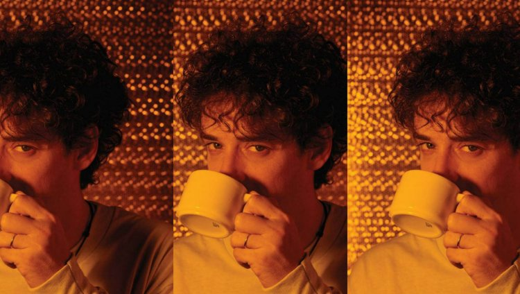
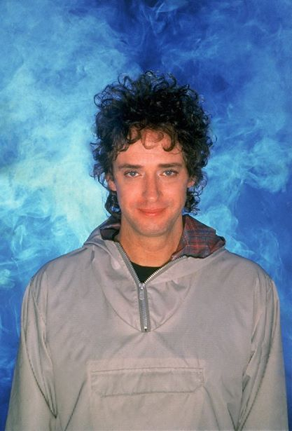
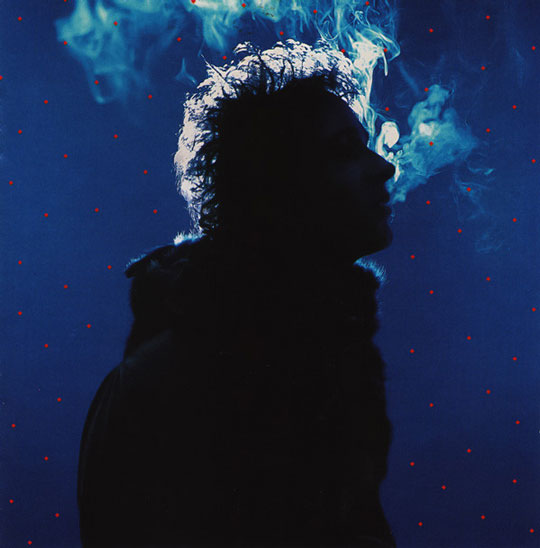
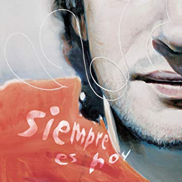
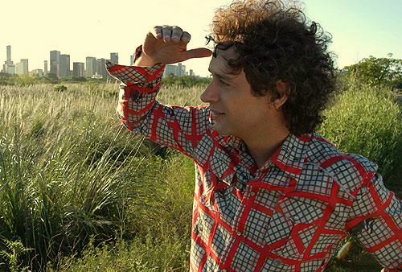
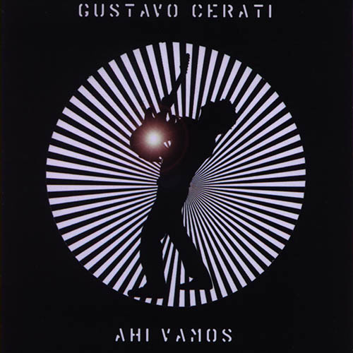
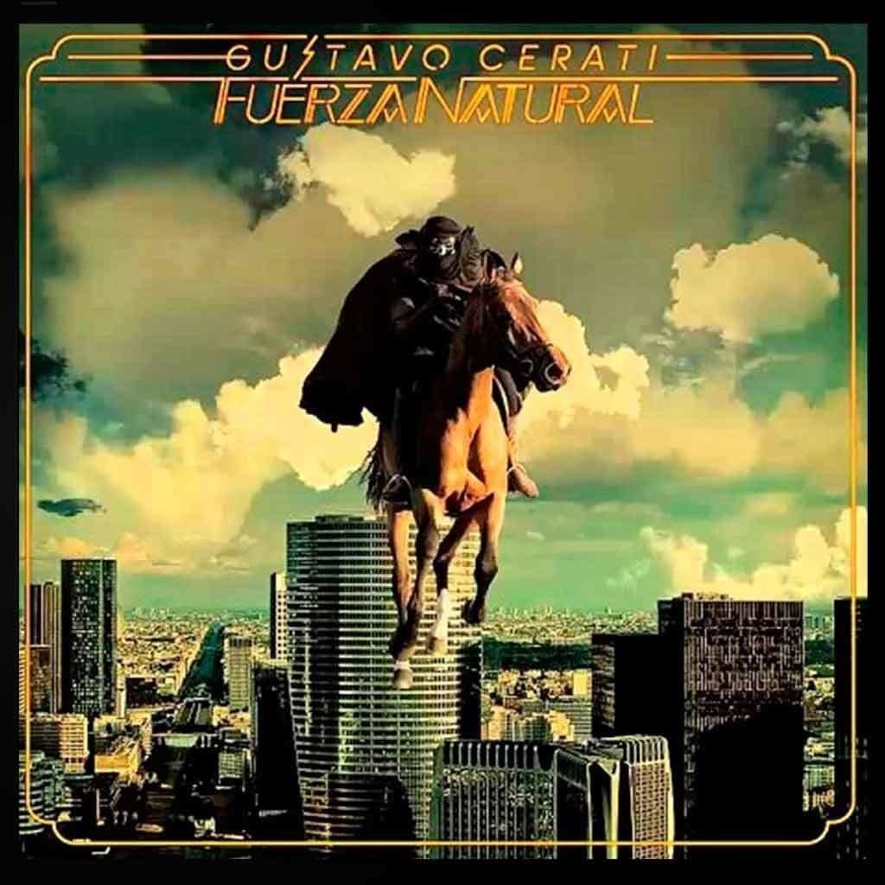
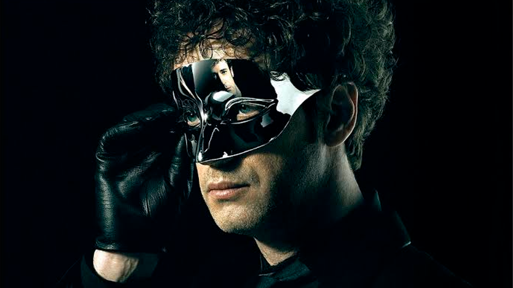

DISCOGRAFÍA CERATI
1993 - 2009

Amor Amarillo 1993
.AMOR AMARILLO.
Es el primer disco solista de la carrera de Gustavo Cerati, realizado en el año 1993 (en plena etapa de fricción con Soda Stereo). El álbum fue una sorpresa para los fanáticos de la banda por el hecho que era algo totalmente diferente a lo que venía haciendo y por el hecho de haberse ido a vivir fuera del país poniendo en pausa así la actividad de la banda que en ese momento no se encontraba disuelta.
Escuchar "Amor Amarillo"
.BOCANADA.
Bocanada es el segundo álbum de estudio solista del músico de rock argentino Gustavo Cerati, el primero luego de la disolución de Soda Stereo. Recibió excelentes críticas, tanto de los especialistas como de los fanáticos. El crítico de rock David Cortés Arce dijo acerca del álbum Bocanada es un álbum fundamental en la historia del rock iberoamericano, y en general, de todos los países hispanoparlantes". La web de crítica musical Allmusic lo calificó con 4 1/2 estrellas de 5 posibles.
Escuchar "Bocanada"

Bocanada 1999

Siempre es hoy 2002
.SIEMPRE ES HOY.
Es el tercer álbum de estudio como solista del músico argentino de rock Gustavo Cerati lanzado el 26 de noviembre de 2002. Es un álbum que sigue el estilo de Bocanada (1999), aunque los elementos del rock están parcialmente presentes, y se hace más énfasis en la electrónica. En un principio iba a ser en realidad doble, ya que se contaba con gran cantidad de material, pero terminó siendo editado en un único disco debido a la situación económica que atravesaba el país en ese momento.
Escuchar "Siempre es hoy"
.AHÍ VAMOS.
Es el cuarto álbum de estudio como solista del músico artístico argentino Gustavo Cerati lanzado el 4 de abril de 2006 por Sony Music. El álbum obtuvo excelentes críticas y popularidad, especialmente en Argentina, Chile, Colombia y México. El disco fue certificado como platino en Argentina sólo con las ventas anticipadas, y alcanzó el disco de oro en México. En este álbum, Cerati vuelve al estilo roquero y crudo que lo caracterizaba en álbumes como Canción Animal y Dynamo de Soda Stereo.
Escuchar "Ahí Vamos"

Ahí Vamos 2006

Fuerza Natural 2009
.FUERZA NATURAL.
Es el quinto y último álbum de estudio de Gustavo Cerati en su etapa como solista, lanzado el 1 de septiembre de 2009. El disco se caracteriza por un sonido folk con presencia de guitarras acústicas y mandolinas. Fue certificado con disco de oro en Argentina por vender más de 20 000 copias en su primera semana de lanzamiento. Luego alcanzó el disco de platino.
Escuchar "Fuerza Natural"